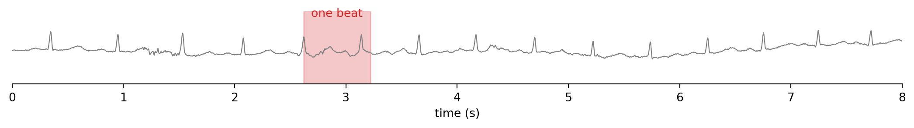
Biomedical Engineering Skills 3
Week 3: comparing, deciding, validating
Massimo Vassalli
massimo.vassalli@glasgow.ac.uk
Where we are
DEFINE → DECOMPOSE → SPECIFY ⇄ DIAGNOSE → VALIDATE
Last week: one long recording, and a measurement (a heart rate). This week: many heartbeats, and a decision (is this beat normal?).
By the end of today you should be able to:
- compare two groups of signals, writing the basic code yourself and asking the AI for the rest, and read what it writes
- derive a success criterion from the application, in DEFINE
- turn a parameter chosen by eye into a step that calculates it from the data, and diagnose that step with digital data
- validate a classification against reference labels, and choose a search parameter by looking for plateaux, not peaks
- tell performance on the data used to choose from performance on data held back
From one recording to many beats
Last week’s tutorial found the beats in a 5-minute ECG. The next steps of that pipeline would be:
- cut each beat out of the recording
- stretch every beat to the same number of samples, and normalise its amplitude
- classify each beat: normal or abnormal?
Today’s data start where the first two steps end: 4998 beats, already cut, stretched to 140 samples and normalised (mean 0, standard deviation 1), each labelled by cardiologists. As far as we can tell, they come from one long recording of one patient with heart failure.
DEFINE
The data
ecg.csv: one row per beat, 140 samples, then the label.
| beat | 0 | 1 | 2 | … | 138 | 139 | label |
|---|---|---|---|---|---|---|---|
| 0 | -0.11 | -2.83 | -3.77 | … | 0.93 | 0.19 | 1 |
| 1 | -1.10 | -4.00 | -4.29 | … | 1.12 | -1.44 | 1 |
| 2 | -0.57 | -2.59 | -3.87 | … | 0.90 | -0.42 | 1 |
| … | … | … | … | … | … | … | … |
| 4997 | -1.35 | -2.21 | -2.52 | … | -1.58 | -0.68 | 0 |
Reading it in
(4998, 141)
(4998, 140) (4998,)
(array([0, 1]), array([2079, 2919]))Label 1 is normal, label 0 is abnormal: 2919 normal beats, 2079 abnormal. A decision written in DEFINE, because everything that follows depends on it.
All the beats
The basic skill: plot everything, with the few calls you know.
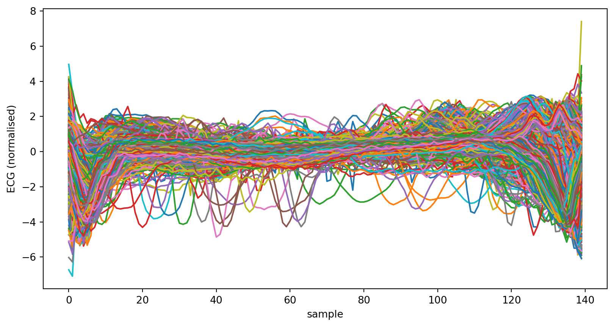
ax.plot draws one line per column, so we pass the transpose .T: one column per beat. 4998 lines on top of each other: we see that the beats have a common shape, and little else.
Two groups, made visible
What we want to see matters more than how to code it. So we ask, and read what comes back:
# PROMPT: plot all the beats on one figure,
# normal in black and abnormal in red, with
# enough transparency that the regions where
# many beats overlap stand out. Label the axes.
fig, ax = plt.subplots()
ax.plot(beats[labels == 1].T,
color="black", alpha=0.01)
ax.plot(beats[labels == 0].T,
color="red", alpha=0.01)
ax.set_xlabel("sample")
ax.set_ylabel("ECG (normalised)")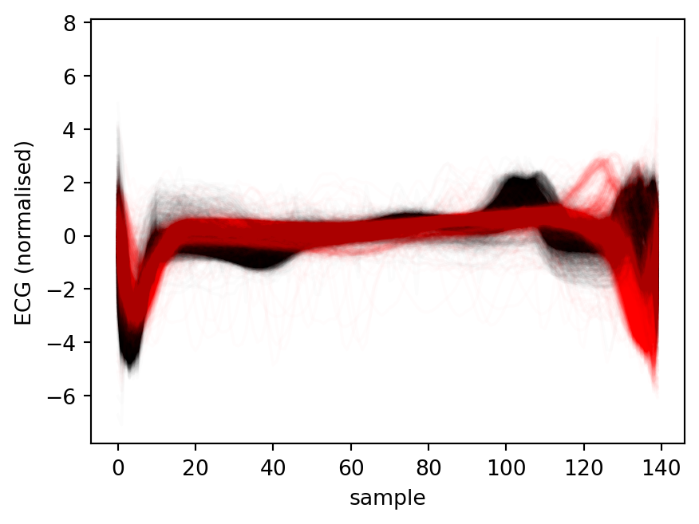
Read it: beats[labels == 1] keeps the rows (beats) whose label is 1; alpha=0.01 makes each line almost transparent, so colour builds up only where many beats overlap.
Where do the groups differ?
# PROMPT: for each sample position, compute the
# mean and standard deviation of the normal and
# of the abnormal beats; plot each mean with a
# shaded band of ± one standard deviation,
# normal in black, abnormal in red.
normal = beats[labels == 1]
abnormal = beats[labels == 0]
x = np.arange(beats.shape[1])
fig, ax = plt.subplots()
for group, colour in [(normal, "black"),
(abnormal, "red")]:
m = group.mean(axis=0)
s = group.std(axis=0)
ax.plot(x, m, color=colour)
ax.fill_between(x, m - s, m + s,
color=colour, alpha=0.2)
ax.set_xlabel("sample")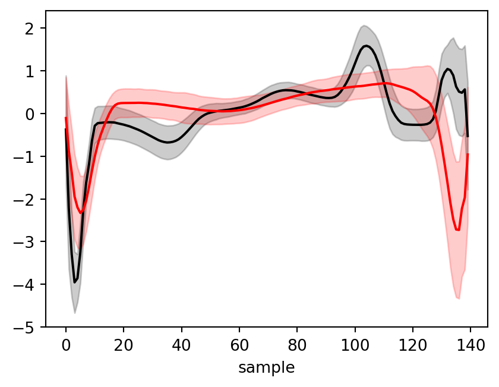
Read it: axis=0 summarises down the rows, giving one mean per sample position. Reading code takes time: train it on every cell the AI gives you.
The question
Can a single sample of the beat tell normal beats from abnormal ones?
What does “a single sample” look like? Take one position, say sample 70: one value per beat.
One slice
# PROMPT: take the values at sample 70
# and plot their histogram for normal
# and abnormal beats separately, as
# densities, on the same axes.
values = beats[:, 70] # one value per beat
print(values.shape)
fig, ax = plt.subplots()
ax.hist(values[labels == 1], bins="auto", density=True,
alpha=0.5, color="black", label="normal")
ax.hist(values[labels == 0], bins="auto", density=True,
alpha=0.5, color="red", label="abnormal")
ax.set_xlabel("value at sample 70")
ax.set_ylabel("density")
ax.legend()(4998,)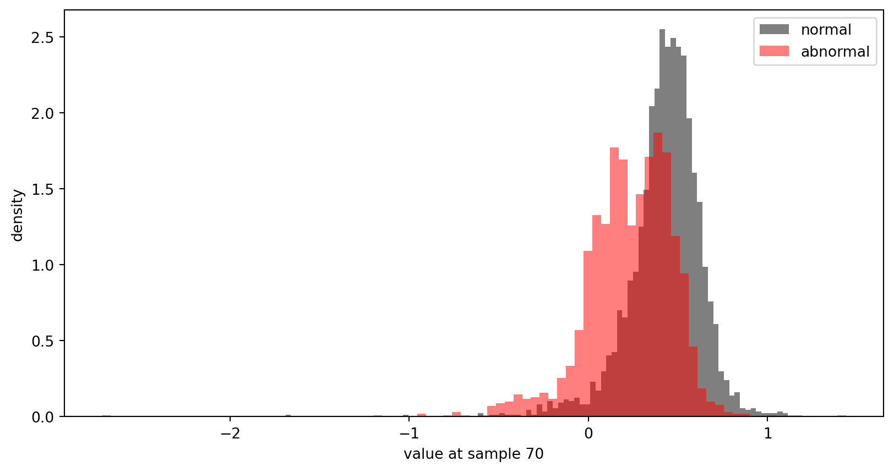
At sample 70 the two groups sit almost on top of each other: knowing the value tells us little about the label. Look back at the mean ± spread plot: where should we slice instead?
Tip
density=True scales each histogram to unit area, so groups of different sizes (2919 and 2079) are compared by shape.
Moving the slice: a prompt, or an edit?
The cell we have (sample 70)
values = beats[:, 70]
fig, ax = plt.subplots()
ax.hist(values[labels == 1], bins="auto",
density=True, alpha=0.5,
color="black", label="normal")
ax.hist(values[labels == 0], bins="auto",
density=True, alpha=0.5,
color="red", label="abnormal")
ax.set_xlabel("value at sample 70")
ax.set_ylabel("density")
ax.legend()The regenerated cell answers the request and quietly changes the rest: 30 bins instead of "auto", no density=True (the bigger group now looks more important), a different plotting style, no axis labels. An edit of the original, beats[:, 35] and the label, changes only what we meant to change.
Sample 35
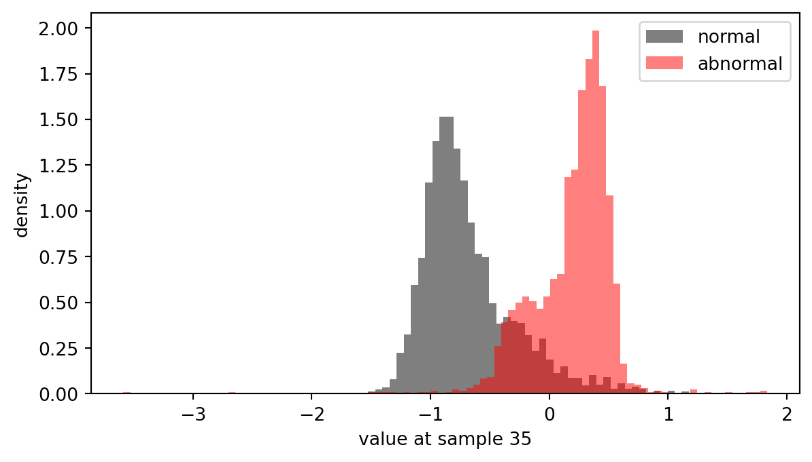
The two groups have moved apart, with a gap of few beats between them: abnormal beats tend to be higher at sample 35. They still overlap a little.
A threshold
A rule: abnormal if the value at sample 35 is above a threshold T. Suppose T = 0:
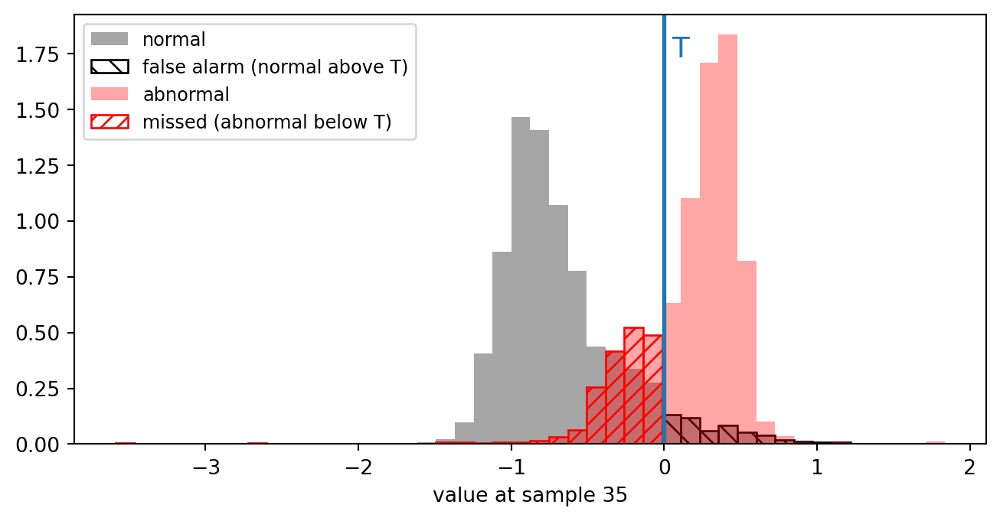
Every threshold makes two kinds of mistake: missed abnormal beats (red, left of T) and false alarms (normal beats right of T). Moving T trades one for the other. Where to put it, and how to judge the result, are the two questions of today.
Two kinds of error, one table
Comparing the rule’s answers with the cardiologists’ labels gives four counts:
| reference: abnormal | reference: normal | |
|---|---|---|
| rule: abnormal | correct (TP) | false alarm (FP) |
| rule: normal | missed (FN) | correct (TN) |
- sensitivity = TP / (TP + FN): the fraction of abnormal beats the rule catches
- specificity = TN / (TN + FP): the fraction of normal beats the rule leaves alone
- accuracy = (TP + TN) / all: the fraction of correct answers, both kinds together
The standard vocabulary of every diagnostic test.
Three rules, the same data
| Rule | TP | FN | FP | TN | Sens. | Spec. | Acc. |
|---|---|---|---|---|---|---|---|
| everything is normal | 0 | 2079 | 0 | 2919 | 0.00 | 1.00 | 0.58 |
| everything is abnormal | 2079 | 0 | 2919 | 0 | 1.00 | 0.00 | 0.42 |
| abnormal if sample 35 > 0 | 1593 | 486 | 184 | 2735 | 0.77 | 0.94 | 0.87 |
A rule that never thinks anything is wrong is right 58% of the time, and useless: it misses every abnormal beat. Accuracy alone can hide this; sensitivity and specificity cannot.
The application decides
What should the rule be judged on?
| Application | The error to avoid | Criterion |
|---|---|---|
| screening a population | missing a patient | sensitivity at least 95%, then the best specificity |
| confirming before a risky treatment | treating a healthy person | specificity at least 99%, then the best sensitivity |
| a quick summary | both equally | accuracy |
The criterion is written in DEFINE, before any rule exists. It is the measure the pipeline will be judged on in VALIDATE. Today we use accuracy; confirmation comes back at the end; screening is the assignment.
DECOMPOSE
Where should T go?
By eye, on the histogram? Different people would put it in different places, and it would have to be redone for every position and every new dataset.
By trying many values and keeping the one with the best score on the labels? That is a search, not a method: it gives no reason for the value, and it fits whatever data it was tried on.
Important
T must be calculated from the data, by a rule we can state, check and repeat. Calculating T becomes a step of the pipeline.
The pipeline
- Load: the file → the beats (4998 × 140) and the reference labels
- Slice: the beats and a position
p→ one value per beat - Calculate the threshold: the values and the labels →
T, and the direction (abnormal above or belowT) - Classify: the values,
Tand the direction → one decision per beat
To judge it, in VALIDATE:
- Count: the decisions and the cardiologists’ labels → TP, FN, FP, TN → sensitivity, specificity, accuracy, to be checked against the criterion written in DEFINE
T is no longer chosen: it is calculated. The only parameter left to choose is the position p.
A rule for T
Put T at the same distance from the two group means, measured in units of each group’s spread:
\[\frac{T - \mu_{\text{normal}}}{\sigma_{\text{normal}}} = \frac{\mu_{\text{abnormal}} - T}{\sigma_{\text{abnormal}}} \quad\Rightarrow\quad T = \frac{\mu_{\text{abnormal}}\,\sigma_{\text{normal}} + \mu_{\text{normal}}\,\sigma_{\text{abnormal}}}{\sigma_{\text{normal}} + \sigma_{\text{abnormal}}}\]
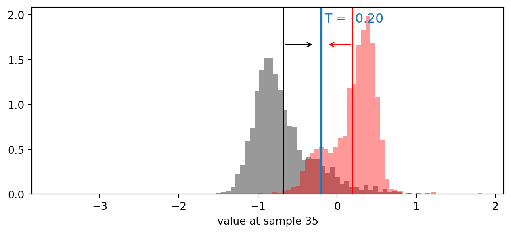
A wider group pushes T away from itself. The direction comes for free: abnormal above T if the abnormal mean is higher.
SPECIFY ⇄ DIAGNOSE
SPECIFY: calculate the threshold
# PROMPT: write calculate_threshold(values, is_abnormal). values is a 1D
# numpy array, is_abnormal a boolean array of the same length. Compute the
# mean and standard deviation of each group, and return two values:
# T = (mean_abn * std_norm + mean_norm * std_abn) / (std_norm + std_abn),
# as a float, and abnormal_above, True if the abnormal mean is higher.
def calculate_threshold(values, is_abnormal):
v_norm, v_abn = values[~is_abnormal], values[is_abnormal]
mean_norm, std_norm = v_norm.mean(), v_norm.std()
mean_abn, std_abn = v_abn.mean(), v_abn.std()
T = (mean_abn * std_norm + mean_norm * std_abn) / (std_norm + std_abn)
return float(T), bool(mean_abn > mean_norm)Every decision is in the prompt: the formula, the direction, the types of what comes back.
DIAGNOSE: digital distributions
Two groups we build ourselves, so that the right T is known by hand:
# PROMPT: write two_groups(m_norm,
# s_norm, m_abn, s_abn, n) that draws
# n normal values from N(m_norm,
# s_norm) and n abnormal values from
# N(m_abn, s_abn), with a seeded
# random generator, and returns the
# values and is_abnormal. Then print
# calculate_threshold for the three
# cases below.
rng = np.random.default_rng(0)
def two_groups(m_norm, s_norm, m_abn, s_abn, n=100_000):
values = np.concatenate([rng.normal(m_norm, s_norm, n),
rng.normal(m_abn, s_abn, n)])
is_abn = np.concatenate([np.zeros(n, bool), np.ones(n, bool)])
return values, is_abn
# normal N(0, 1), abnormal N(4, 1): T = 2, above
print(calculate_threshold(*two_groups(0, 1, 4, 1)))
# the same, swapped: T = 2, below
print(calculate_threshold(*two_groups(4, 1, 0, 1)))
# abnormal wider, N(6, 2): T = (6*1 + 0*2) / 3 = 2
print(calculate_threshold(*two_groups(0, 1, 6, 2)))(1.997991487573338, True)
(2.0014574368798246, False)
(2.0050645530043876, True)Each case is chosen to test one thing: the formula, the direction, the effect of the spread. Expected values worked out before running.
DIAGNOSE: how well can we separate?
Digital groups that overlap more and more: how many beats does the rule get right?
# PROMPT: for distances between the
# means from 0 to 5, build two groups
# N(0, 1) and N(d, 1), run
# calculate_threshold and classify,
# and plot the accuracy against d,
# with the theoretical curve Phi(d /
# 2).
distances = np.linspace(0, 5, 21)
got = []
for d in distances:
v, is_abn = two_groups(0, 1, d, 1)
T, above = calculate_threshold(v, is_abn)
says = v > T if above else v < T
got.append(np.mean(says == is_abn))
fig, ax = plt.subplots()
ax.plot(distances, got, "o", label="our steps")
ax.plot(distances, norm.cdf(distances / 2),
label="expected (theory)")
ax.set_xlabel("distance between the means (in σ)")
ax.set_ylabel("accuracy")
ax.legend()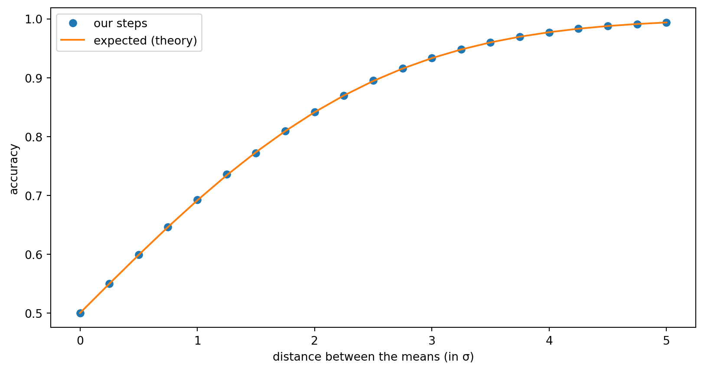
Fully overlapping groups give 50%, a coin toss; well separated ones approach 100%. At sample 35 the real groups are about 2.4 spreads apart: the same curve predicts about 89%.
SPECIFY ⇄ DIAGNOSE: classify
# PROMPT: write classify(values, T,
# abnormal_above): return a boolean
# array, True (abnormal) where the
# value is above T if abnormal_above
# is True, below T otherwise. A value
# exactly equal to T is normal.
def classify(values, T, abnormal_above):
return values > T if abnormal_above else values < T
v = np.array([0.2, 0.8, 0.5])
print(classify(v, 0.5, True), " expected [False True False]")
print(classify(v, 0.5, False), " expected [ True False False]")[False True False] expected [False True False]
[ True False False] expected [ True False False]Three values: one below, one above, one exactly at T, in both directions.
VALIDATE
Sample 35, against the reference
# PROMPT: run the pipeline at sample
# 35 (slice, calculate_threshold,
# classify). Count TP, FN, FP, TN
# against is_abnormal, print them as a
# 2x2 table, then sensitivity,
# specificity and accuracy.
is_abnormal = labels == 0
values = beats[:, 35] # slice
T, above = calculate_threshold(values, is_abnormal) # threshold
says = classify(values, T, above) # classify
tp = np.sum(says & is_abnormal)
fn = np.sum(~says & is_abnormal)
fp = np.sum(says & ~is_abnormal)
tn = np.sum(~says & ~is_abnormal)
print(f"T = {T:.2f}, abnormal {'above' if above else 'below'}")
print(f" ref abnormal ref normal")
print(f"rule abnormal {tp:12d} {fp:10d}")
print(f"rule normal {fn:12d} {tn:10d}")
print(f"sensitivity {tp / (tp + fn):.3f}")
print(f"specificity {tn / (tn + fp):.3f}")
print(f"accuracy {(tp + tn) / values.size:.3f}")T = -0.20, abnormal above
ref abnormal ref normal
rule abnormal 1803 349
rule normal 276 2570
sensitivity 0.867
specificity 0.880
accuracy 0.875The table we drew in DEFINE, now filled in: about 87%, close to what the digital curve predicted.
The position: a search parameter
T is calculated; p is still chosen. Run the whole pipeline at every position:
# PROMPT: write pipeline_accuracy(beats, is_abnormal, p)
# that runs slice -> calculate_threshold -> classify at
# position p and returns the accuracy. Plot the accuracy
# for every position from 0 to 139.
def pipeline_accuracy(beats, is_abnormal, p):
values = beats[:, p]
T, above = calculate_threshold(values, is_abnormal)
return np.mean(classify(values, T, above) == is_abnormal)
acc = [pipeline_accuracy(beats, is_abnormal, p) for p in range(140)]
fig, ax = plt.subplots(figsize=(10, 4))
ax.plot(acc)
ax.set_xlabel("sample position p")
ax.set_ylabel("accuracy")The position: a search parameter
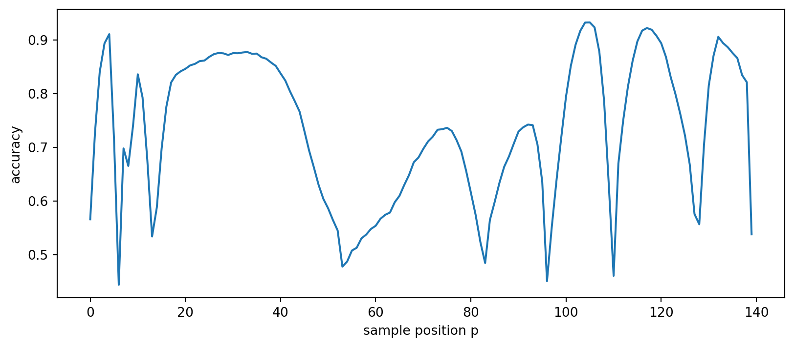
Plateau or peak?
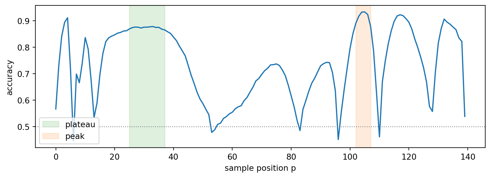
A broad plateau around 25–37 (about 87%), and a narrow peak around 104 (about 93%) that falls to 63% a few samples away.
If the beats were cut a little differently, the plateau would barely notice; the peak might vanish. Higher is not always better: robust is.
Below 50%?
At some positions the accuracy falls below 50%, the floor of our digital test. A bug?
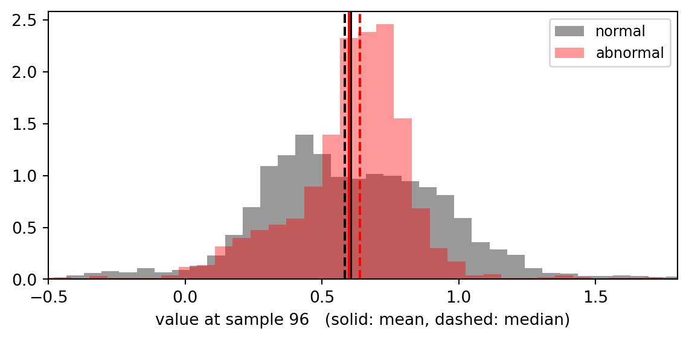
At sample 96 the two means are almost identical (0.60 and 0.60), so the direction is decided by a difference in the third decimal, and here the wrong way round: the abnormal group has a low tail that pulls its mean down, while its median is higher. The rule calls abnormal “below”, and gets most beats wrong.
Important
Not a bug in the code: an assumption of the rule (roughly symmetric groups) that our digital Gaussians always satisfied. Digital data test only the cases we thought of.
Means or medians?
A more robust rule: the median instead of the mean, and the interquartile range (the spread of the middle 50%) instead of the standard deviation. A long tail moves the mean, but hardly moves the median.
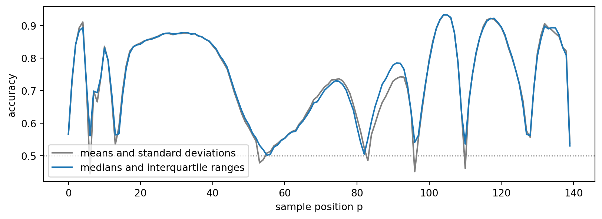
Where the groups are well apart, the two rules agree (sample 35: 0.875 and 0.876). Where they are not, the robust rule never falls below 50% (lowest: 0.50, against 0.44).
The change is one sentence in the SPECIFY prompt, and one new digital test in DIAGNOSE: a skewed group, with a long tail, whose mean and median disagree.
Chosen on, reported on
So far every number came from the same 4998 beats we used to choose. What if we choose p on only 50 beats?
# PROMPT: split the beats at random
# (seed 3) into 50 to choose and the
# rest held back. Find the position
# with the best pipeline_accuracy on
# the 50; then calculate T on the 50
# and report the accuracy on the beats
# held back.
rng = np.random.default_rng(3)
idx = rng.permutation(len(labels))
choose, rest = idx[:50], idx[50:] # 50 to choose, 4948 held back
acc50 = [pipeline_accuracy(beats[choose], is_abnormal[choose], p)
for p in range(140)]
p50 = int(np.argmax(acc50))
print("chosen on 50 beats: p =", p50, " accuracy", round(acc50[p50], 3))
v = beats[:, p50]
T50, above50 = calculate_threshold(v[choose], is_abnormal[choose])
says = classify(v[rest], T50, above50)
print("on the 4948 held back: accuracy",
round(np.mean(says == is_abnormal[rest]), 3))chosen on 50 beats: p = 3 accuracy 0.96
on the 4948 held back: accuracy 0.867With 140 positions to choose from, the best one on 50 beats looks better than it is: part of its score is luck. Measured on data held back, the number is honest. In week 6 this becomes a method.
A different application: validate what we have
The criterion for confirmation (from DEFINE): specificity at least 99%. Does our pipeline meet it, at any position?
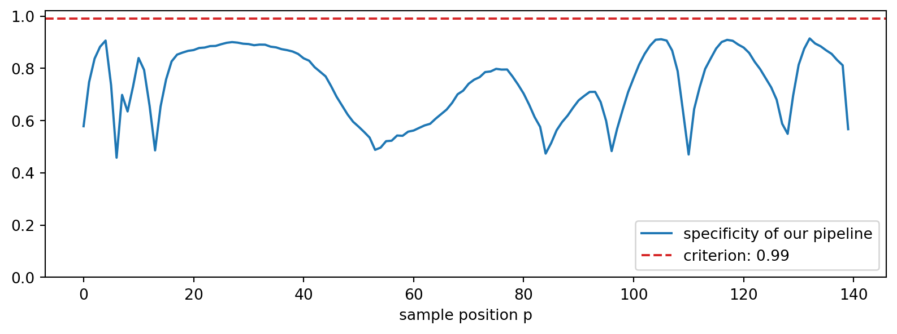
No: the best position reaches 0.91. This is a VALIDATE conversation: the criterion written in DEFINE is checked, the pipeline fails it, and the answer is not to search harder but to go back to DECOMPOSE and change the step that decides where T goes.
A different application, a different step
For confirmation, only the threshold step changes: put T where just 1% of the normal beats would raise a false alarm.
# PROMPT: write threshold_for_confirmation(values, is_abnormal):
# T is the 99th percentile of the normal values if the abnormal
# median is higher (1st percentile otherwise); return T and the
# direction. Run the pipeline with it at every position and plot
# sensitivity and specificity against the position, with the values
# of the previous pipeline (sens_acc, spec_acc) dashed for comparison.
def threshold_for_confirmation(values, is_abnormal):
above = np.median(values[is_abnormal]) > np.median(values[~is_abnormal])
q = 99 if above else 1
return float(np.percentile(values[~is_abnormal], q)), bool(above)
sens_c, spec_c = [], []
for p in range(140):
v = beats[:, p]
T, above = threshold_for_confirmation(v, is_abnormal)
says = classify(v, T, above)
sens_c.append(np.sum(says & is_abnormal) / is_abnormal.sum())
spec_c.append(np.sum(~says & ~is_abnormal) / (~is_abnormal).sum())
fig, ax = plt.subplots(figsize=(10, 3.6))
ax.plot(sens_c, color="C0", label="sensitivity")
ax.plot(spec_c, color="C1", label="specificity")
ax.plot(sens_acc, "--", color="C0", alpha=0.5, label="sensitivity, previous step")
ax.plot(spec_acc, "--", color="C1", alpha=0.5, label="specificity, previous step")
ax.set_xlabel("sample position p")
ax.legend(fontsize=9, loc="lower right")A different application, a different step
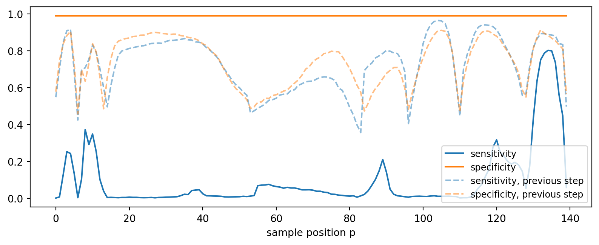
Confirmation: the numbers
| Position | Sensitivity | Specificity |
|---|---|---|
| 35 | 0.02 | 0.99 |
| 134 | 0.80 | 0.99 |
Specificity stays at 99% everywhere, by construction: that is what the threshold step now guarantees. Sensitivity is what changes: at sample 35 the rule catches almost nothing; at sample 134 it catches 80% of abnormal beats.
Same data, same pipeline, one step changed: the best position depends on what the pipeline is for.
Why exactly 99%?
T is the 99th percentile of the normal values: by definition, 99% of the normal values are at or below T. With the rule “abnormal if above T”:
\[\text{FP} = \#\{\text{normal beats with } v > T\} = 0.01\, N_{\text{normal}} \qquad \text{TN} = \#\{\text{normal beats with } v \le T\} = 0.99\, N_{\text{normal}}\]
\[\text{specificity} = \frac{\text{TN}}{\text{TN} + \text{FP}} = \frac{0.99\, N_{\text{normal}}}{N_{\text{normal}}} = 0.99\]
Nothing here depends on the position, nor on the abnormal beats: specificity is fixed by the step itself (up to ties between equal values). Sensitivity is not:
\[\text{sensitivity} = \frac{\#\{\text{abnormal beats with } v > T\}}{N_{\text{abnormal}}}\]
depends on where the abnormal values sit with respect to T, and that changes with the position. (When abnormal is below, the same holds with the 1st percentile.)
One idea, several forms
VALIDATE compares what the pipeline produces with a reference. The comparison depends on what the pipeline produces:
| The pipeline produces | The comparison |
|---|---|
| a category (normal or abnormal) | the four counts (today) |
| a number (a heart rate, a length) | the difference: bias and spread |
| a count (cells in an image) | the counting error, image by image |
| a mask (the pixels of an object) | the four counts, pixel by pixel |
Tutorial
How different is each beat from a typical normal beat?
The same data, the same criterion, the same table, but a different idea: instead of one sample, use the whole beat.
- DEFINE: the question, the criterion, the labels
- DECOMPOSE: build a template (the average normal beat); measure how far each beat is from it; calculate a threshold on that distance; classify
- SPECIFY ⇄ DIAGNOSE each step, with digital data
- VALIDATE: against the reference labels; on beats held back; and against today’s one-sample rule
Assignment 2
Screening athletes. Catch as many abnormal hearts as possible, and report how many healthy athletes would be referred by mistake.
- the same ECG beats as today
- a pipeline in between today’s two: the distance from the normal template, using only five points of the beat, with today’s rule for T
- five points chosen by you, against five points chosen at random, many times over
- everything chosen on part of the beats; performance reported on beats held back
Instructions, data and deadline on Moodle.
Take-home message
- Plot everything yourself; ask the AI for the refined figure, and read what it writes; prefer a surgical edit to a regenerated cell
- The success criterion comes from the application, and is written in DEFINE; VALIDATE measures it
- A parameter chosen by eye or by trial is not a method: calculate it, as a step, and diagnose it with digital data
- Choose search parameters on plateaux, not peaks
- A rule always looks better on the data it was chosen on: judge it on data held back

ENG3090 Biomedical Engineering Skills 3